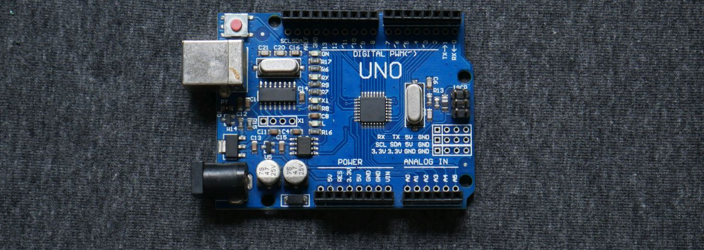
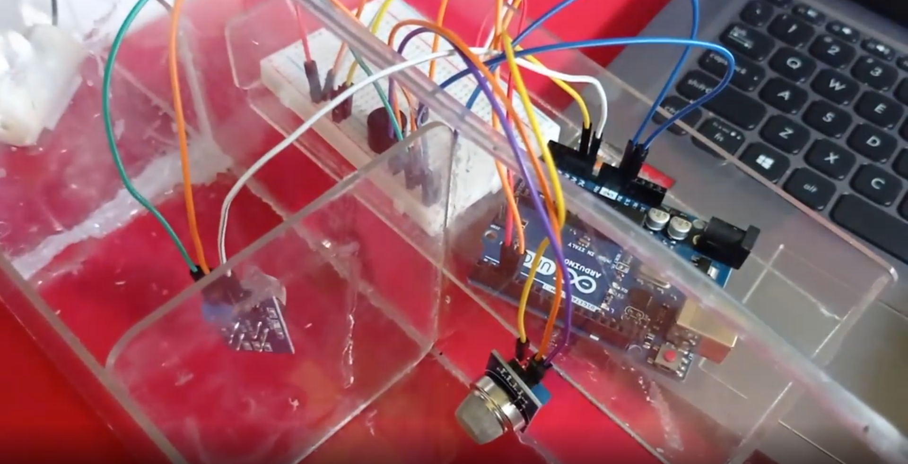
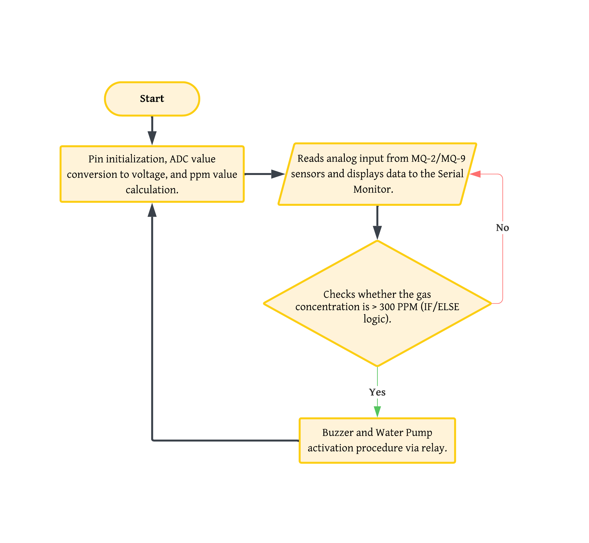
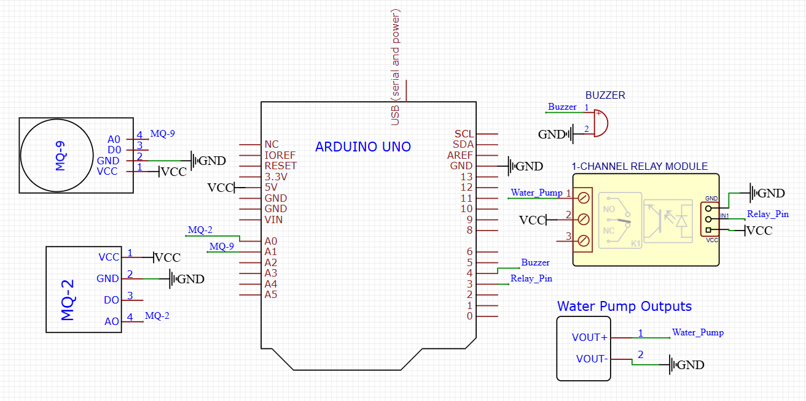

Fire Suppression System Using MQ2 and MQ9 Sensors Integrated with a Microcontroller
Overview
This project presents the design of an automated fire suppression system using cost-effective and accessible electronic components as a practical implementation of embedded systems. The system detects smoke and hazardous gases—LPG, carbon monoxide (CO), and methane (CH₄)—using MQ-2 and MQ-9 sensors, with an Arduino Uno as the central processing unit. When gas concentrations exceed 300 ppm, the system automatically triggers a buzzer for early warning and activates a relay-controlled water pump to suppress potential fire hazards.
Background
Fire outbreaks represent a significant threat to both property and human life, often resulting in devastating material losses and serious injuries. In such emergencies, early detection and rapid response are critical factors in minimizing negative impacts. This research was driven by the need for an affordable yet reliable fire prevention system that can operate automatically without human intervention. By integrating MQ-series gas sensors with an Arduino microcontroller, the system addresses the danger of invisible flammable gases and smoke that often go undetected until a fire has already spread. The goal is to accelerate response times, allowing for faster evacuation and immediate mitigation through automated suppression.

Documentation of the assembly on the prototype.
Flowchart & Wiring Diagram
The hardware architecture of this fire suppression system is centered around the Arduino Uno, which acts as the main controller. The system employs a dual-sensor configuration: the MQ-2 sensor detects smoke and flammable gases, while the MQ-9 sensor monitors carbon monoxide (CO) and LPG concentrations. Both sensors are connected to the Arduino’s analog input pins (A0 and A1), enabling continuous air quality monitoring.
The system operates through a structured sequence. First, the Arduino continuously acquires analog voltage data from both sensors. The data is then processed and compared against a predefined safety threshold of 300 ppm. If the detected gas concentration exceeds this limit, the Arduino sends a HIGH signal to digital pins 3 and 4. This action triggers the buzzer to provide an audible alert and activates the relay module, which powers the water pump to suppress potential fire hazards.

Flowchart of Fire Suppression Systems.

The complete wiring diagram showcasing the integration between Arduino, MQ-Series sensors, Buzzer, Relay Module, and Water Pump.
Methodology & Frameworks
Hardware Architecture
The system uses an Arduino Uno as the central microcontroller, connected to MQ-2 and MQ-9 sensors to monitor smoke, LPG, and carbon monoxide (CO). A relay module is integrated to automatically control a water pump, enabling immediate fire suppression when hazardous gas levels are detected.
Algorithmic Control & Calibration
Firmware developed in C/C++ runs a real-time loop that converts analog sensor readings into gas concentrations (ppm). Using a threshold-based framework set at 300 ppm, the system triggers a dual-response protocol: activating the buzzer for an audible alert and engaging the water pump simultaneously to mitigate fire risks.
Key Impact
Provides an autonomous early-warning system that enhances residential safety by detecting hazardous gases and triggering immediate fire suppression. Using calibrated sensors with a 300 ppm threshold, it offers a reliable and cost-effective application of electronics for mitigating environmental hazards.
Project Resources
The complete source code for the hardware integration (Arduino Uno) is available on my GitHub repository.
Project Notes
This project was a collaborative team effort involving four members as part of a Digital Electronics course. My primary contributions focused on the hardware assembly and Arduino IDE programming, where I implemented the calibration logic and automated response system. While the initial conceptual inspiration was derived from educational resources on YouTube, our team customized the design to include a dual-sensor configuration for enhanced detection accuracy.